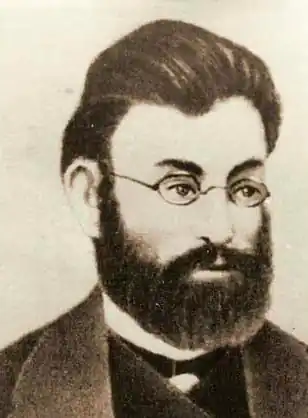

Іван Манжура – одна з найпомітніших постатей в українській поезії останньої третини ХІХ ст.
Творчість його цікава передусім створенням у ній відносно цілісного образу героя, не розщепленого за групапи жанрів чи темами, — образу, що поставав на матеріалі усієї (хай і не значної обсягом, але різноманітної) проблематики, заторкнутої поетом.
Іван Іванович Манжура народився 20 жовтня (1 листопада за н. ст.) 1851 року в Харкові в сім’ї дрібного чиновника. Рано втратив матір, згодом зазнав поневірянь із батьком, аж поки його долею не почала клопотатись тітка – дружина вченого О. Потебні, що мешкав і провадив діяльність у Харкові. У 1870-1872 рр. Манжура – вільний слухач Харківського ветеринарного інституту, був виключений звідти як "неблагонадійний" (таке саме формулювання супроводжувало ще раніше його виключення з гімназії), втративши право вступу до іншого вищого навчального закладу. Відтоді Манжура мешкає в різних населених пунктах степового Півдня України (переважно живе він на Катеринославщині – то в самому губернському місті, то в поблизьких навколишніх селах), перебивається різними роботами. Постійні мандри зводять його з представниками різних верств, що дає йому змогу вести широку практичну діяльність фольклориста й етнографа. 1876 р. Манжура як доброволець бере участь у російсько-турецькій війні; з місця бойових дій, що велися у Сербії, повертається пораненим. Серед його занять, що давали хоч якийсь заробіток, на перший план виходить журналістська робота, зосереджена довкола місцевої катеринославської преси та поєднувана з науковими народознавчими подорожами в віддаленіші регіони. На час поетичного дебюту в катеринославській газеті "Степь" всередині 1885 р. Манжура уже є фаховим, відомим в культурних і наукових колах фольклористом і етнографом. В "Русской старине" 1878-1879 рр. друкувалися записані Манжурою на Слобожанщинілегенди "Магнус, король шведський", "Стеньки Разина сынок", "Осада Смоленська", "Взятие Хотина". Трохи далі значну кількість фольклорно-етнографічних матеріалів Манжура друкує в "Киевкой старине". Записи, зроблені Манжурою, в більшому чи меншому обсязі увійшли в чотири фольклористичні збірки, до впорядкування й видання яких був причетний М. Драгоманов: "Исторические песни малорусского народа" (в 2-х томах, К., 1875, спільно з В. Антоновичем), "Малорусские народные предания и рассказы" (К., 1876), "Нові українські пісні про громадські справи" (Женева, 1881), "Політичні пісні українського народу ХVІІІ-ХІХ ст." (Ч. 1, розд. 1, 2, Женева, 1883, 1885). За півтора десятка літ Манжура в пошуках зразків народної словесності здійснив численні мандрівки, переважно пішки сходивши Катеринославщину, Харківщину та Полтавщину. Також інтереси інших, суміжних наук та дослідів не ігнорувалися ним у цих мандрах: рідкісними, роздобутими Манжурою екземплярами рослин, комах поповнювались колекції його знайомих – учителів Катеринослава. Та й у кімнаті самого поета, як згадують очевидці, було тісно від різноманітних гербаріїв та опудал. У катеринославській газеті "Степь" Манжура публікує вірш "Босяцька пісня", згодом, ще докінця 1885 р. та у 1886 р. – вірші "На пасіці", "На шляху" (пізніша назва – "З заробітків"), "Лелії", "26 лютого", "Веснянка", "Моїм судцям" ("Незвичайний"), "Нива" ("Дума"). Вже у першій групі віршів, друкованих Манжурою, немає слідів літературного учнівства, серед них – ті твори, яким пізніше випало стати хрестоматійними. Готуючи першу поетичну книгу, Манжура активний на ділянці фольклористики, етнографії, навіть соціології та історії. Був обраний дійсним членом Харківського історико-філологічного товариства, а 1891 р. став дійсним членм Московського Товариства любителів природознавства, антропології та етнографії. Про Манжуру як фольклориста й етнографа захоплено відгукувалися І. Франко, О. Потебня, М. Сумцов, М. Янчук, П. Шейн, Ф. Колесса. При всьому тому Манжура, мешканець то Катеринослава, то навколишніх сіл, мандрівник нерідко "сковородинського" зразка, провадив свою діяльність поза широкими літературними чи науковими колами. Поетична збірка Манжури "Степові думи та співи" побачила світ у Петербурзі 1889 року. Збірка містила 34 ліричні вірші та баладу-поему "Ренегат", а також кілька віршових гуморесок. За кілька років до своєї смерті (помер 3 (15 за н. ст.) травня 1893 р.) він встигає написати ще більше півсотні ліричних творів, де випробовує нові цікаві мотиви, пробує з них укласти збірку, озаголовлену "Над Дніпром" (залишилася невиданою). Упродовж життя поет, переважно за народними мотивами, пише гуморески та дотепні віршові оповідання казкового типу, з них також на 1888 р. укладено збірку (теж за життя не видана). У спадщині поета залишились більші обсягом поеми-"казки" "Трьомсин-богатир", "Іван Голик" та "Казка про хитрого лисовина...".